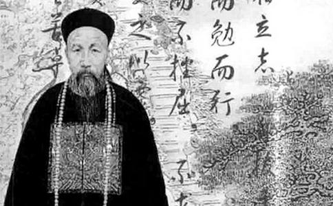

晚清名臣曾国藩颇有用人之明，曾提拔了左宗棠、李鸿章等名臣。
某次，李鸿章带了三个人请曾国藩任命差遣，当时曾国藩刚吃饱饭正在散步。他有饭后缓行三千步的习惯，所以那三人就在一旁恭候。
散步之后，李鸿章请他接见那三人，曾国藩却说不必了。李鸿章很惊讶，曾国藩说道：“在散步时，那三个人我都看过了，第一个低头不敢仰视，是一个忠厚的人，可以给他保守的工作；第二个喜欢作假，在人面前很恭敬，等我一转身，便左顾右盼，将来必定阳奉阴违，不能任用；第三个人双目注视，始终挺立不动，他的功名，将不在你我之下，可委以重任。”
后来三人的发展，果然不出曾氏所料，而第三人就是开发台湾有功的刘铭传。
缓行三千步，不过一小时的光景。就这一小时的光景，决定了三个人的
一个手无缚鸡之力、胸无用兵之策的文弱书生，曾因兵败走投无路，两次投水、多次以剑自刎未遂，还给儿子写绝命信，叮嘱子孙后代永不再带兵征战——而正是这样一个人，最终成为驾驭千军万马的最高统帅，打出了“无湘不成军”的传奇，并被朝廷封为一等勇毅侯，成为清代“文人封武侯”第一人。
曾文正公这段历史相信不少人耳熟能详，也经常有后人好奇：一介书生凭什么立下千古武功？追根究底，不外乎7个字——得人才者得天下！
曾国藩自知领兵打仗非自己的长项，他唯一能做的只能是推行人才战略，“集众人之长，补一已之短”，“合众人之私，成一已之功”，“只在用人二字上，此外竟无可着力处。”据不完全统计，曾氏幕府二十多年间召集的幕僚达400多人，而后官至三品者达47人，位至督抚者33人。左宗棠、李鸿章、彭玉麟、郭嵩焘、沉葆桢、刘蓉、李元度、罗泽南等晚清的栋梁之材，无不受曾举荐，“国之重臣，悉出曾门矣！”中国人素来讲“滴水之恩，当涌泉相报”，这些人对曾国藩怀有知遇之恩、师授之恩、举荐之恩，岂能不尽忠卖命？！人才已备，人心已得，何城不摧？何业不成？！
善于奇谋战策的左宗棠，自视甚高、目空一切，然而在识人和用人这一块，对同乡曾国藩心悦诚服，“知人之明，自愧弗如元辅”；即使是老对手石达开，也不得不承认，曾国藩“虽不以善战闻名，却能识拔贤将，规划精严”；而作为曾之正宗传人的李鸿章，则不止一次向别人表示，不仅自己前半生功名事业出于老师的提携，即其办理外交的本领亦全仗曾国藩“一言指示之力”；半个世纪后的蒋介石，对曾国藩相人的工夫更是佩服得五体投地，他曾经专门研究曾氏用人得失，并将其用在自己的识人、用人上。
那么，曾国藩的人才战略到底有何非凡之处，而令这些顶尖人物折服呢？ 曾国藩桃李满天下，左宗棠门下却无一人出名，为何？左宗棠自负甚高，傲气凌人，到他手下做事往往难得有出头之日；而曾国藩
对人才的重要性，曾做过吏部侍郎的曾国藩认识非常透彻，他认为办天下事要用天下才，办的事越大需要的人才就越多。曾国藩“以荐举人为己任，疆吏阔帅，几遍海内”，看准了的人决不放过，曾效仿刘备三顾茅庐请出了彭玉麟；他还嘱咐师友同僚，随时推荐各类人才；对于任何前来投奔的人才，他都礼遇有加，盛情接待。
正是这种求贤若渴的美名，让全国各地第一流人才对这位曾“伯乐”趋之若鹜，甚至许多新科进士不愿履朝廷之任而愿意进入曾国藩的幕府。
据说曾国藩精通麻衣相法，而事实上，是他一生在考察人才方面摸索、积累了丰富经验。
在《用人三策折》中，曾国藩把具体考察人才的方法归纳为“询事”、“考言”、“奏折”、“诱迫”四法。他主张对人才宜“留心察看，分别贞邪”，相貌、言语、举止、行为……曾国藩无时、无地不注意观察人才，并将其优缺点一一记录下来，以备日后参考使用。此外，曾国藩还经常设置不同的情境来考验对方，以找出真正沉稳内敛、
在选人时，曾不喜欢用官气重、夸夸其谈的人，并以“德大于才”为用人第一要旨，对此他有过精辟的阐述：“与其无德而近于小人，毋宁无才而近于愚人。”
曾国藩不仅善于发现人才，还善于使用人才。他清楚地认识到，“世人聪明才力，不甚相悬，此暗则彼明，此长则彼短，在用人者审量其宜而已。山不能为大匠别生奇木，天亦不能为贤主更出异人”在笔记《才用》篇中，曾国藩进一步指出：“虽有贤才，苟不适于用，不逮庸流，……当其时，当其事，则凡才亦才亦奏神奇之效，否则龃龉而终无所成。故世不患无才，患用才者不能器使适宜也。”
因此，曾国藩不拘一格降人才，“凡于兵事、饷事、吏事、文事有一长者，无不优加奖借，量材录用。”长此以往，使得他帐下军事型的、谋划型的、经济型、技术型的人才应有尽有，其势如日中天，前无古人，登峰造极。
对于可造之才，曾国藩在培养上所花的工夫可谓不遗余力。
“人才以培养而出，器识以磨砺而成”，这是曾国藩的培养人才观。他认为“天下无现成之人才，亦无生知之卓识”，不可动辄说“天下无才”或“无人可用”。
曾国藩从长期实践中归纳出培养人才的方法，主要有“教诲”、“甄别”、“保举”、“超擢”四种。教诲之法即教训、教导；甄别之法即对能力、品质考核鉴定；保举之法即向上级荐举有才或有功的人，使得到提拔任用；超擢之法即超级提升。以教诲为例，凡手下将领来拜见，曾国藩总抽时间接见，并谆谆训诲、告诫他们对上要精忠报国，对下要力戒骚扰百姓；平时，他也经常以书信、饭前闲谈的形式对手下提些要求。因此，属下从士兵到将领，无不将他视为楷模。
曾国藩深谙人的心理，认为对人才不能求全责备，而要多鼓励扶助。他说：“衡人亦不可眼界过高。人才靠奖励而出。大凡中等之才，奖率鼓励，便可望成大器；若一味贬斥不用，则慢慢地就会坠为朽庸。”
在具体实践中，曾国藩建立了有效的激励机制，注重针对不同人的不同需求，采取相应措施来激发其积极性——“武人给钱，文人给名”，即以厚赏来得兵将之勇，以名位来换幕僚之智，皆大
尤其难能可贵的是，曾国藩不怕部属与自己同职齐名，鼓励他们“自立门户”“自辟乾坤”，并为之铺路搭桥。也正是这样，才有了后来李鸿章、左宗棠等人的大放异彩。
知人善用，莫过曾公。这位传奇人物的一生，再次向我们昭示了一个道理：成就别人，最终也将成就你自己——得人才者得天下！
阿比甲当嘎注：昨天末学发表了马云的一篇识人术《 看到的人早晚必成人上人！》马去何人也？《惊呆：马云实在太“可怕”了》今天又发表曾国藩的一篇识人术，或许有人觉得末学取的题目有些夸张，但我告诉大家一点都不夸张，为什么这么说呢？因为大家很少有人能看懂这些文章后面的意义，现在很多文章大量出版识人术、相夫术等等这一系列的文章，都非常好，可是为什么鲜有人用得上呢，很简单的道理：识人者，人亦在识尔，也就是现在大家的眼睛都在往外看，都在寻找符合自己需求的人，上到用人，下到求夫求妻，人人都在往外看，可是你有没有想过，别人也在看你呢？曾国藩为何能写出这般千古识人术，那是因为他自己本来就是一个千古奇葩，这一点从几篇文章我们便可略窥见一斑，一：《不可思议：曾国藩的性情是如此磨出来的》二：《 曾国藩修身十二法你能做到几条？》三：《曾国藩——看一个家族的兴败就三个地方，四条遗嘱家中无一败家子》，从这几篇文章我们可见曾国藩是一个多么严于律己的人，也因为此他成为一代楷模，问题就在这里了，我们很多人只知其一，不知其二，只知道用其识人术去识人，却不知道用这些识人术来识己，来改变自己，因为通常有识人资格的人都是比别人优秀的人，否则你有什么资格去识人呢？不说远，我们近代两位在历史上赫赫有名、耳熟能详的人物，他们是怎样做的：中国现代史上两位著名人物毛泽东和蒋介石都高度评价过曾国藩。毛泽东青年时期，潜心研究曾氏文集，得出了“愚于近人，独服曾文正”的结论。即使是在毛泽东晚年，他还曾说：曾国藩是地主阶级最厉害的人物。蒋介石对曾氏更是顶礼膜拜，认为曾国藩为人之道，“足为吾人之师资”。他把《曾胡治兵语录》当作教导高级将领的教科书，自己又将《曾文正公全集》常置案旁，终生拜读不辍。据说，他点名的方式，
但识己又分识自己这一世的色身臭皮囊这个假我，又分识自己的真心这个终极高度，能识这一世的假我，可能能助你这一世在这个世上无往不利，但是得来的这些东西最终也不能长久，真正最高的是认识这个真我、即真心，很多现代做父母或者世上的一些俗人一听说自己的子女不结婚了，想终身